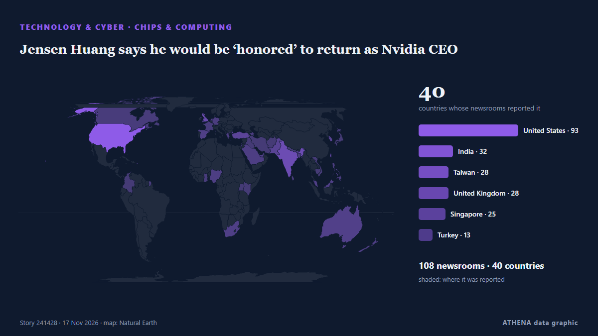

Chips & computing
SponsoredPresented by  Cybernetics and Artificial Intelligence Lab Welcome to the Cybernetics and Artificial Intelligence Laboratory, established at the Department of Business Administration of the National and Kapodistrian University of Athens. The lab is headed by Professor Dimitrios Thomakos. The lab aims to do research that can be published in top venues. Our research uses tools and methods of Artificial Intelligence, and lies in the following areas: - Forecasting - Decision making - Cyber security - Finance We are always looking forward to collaborating with exceptional students!
Cybernetics and Artificial Intelligence Lab Welcome to the Cybernetics and Artificial Intelligence Laboratory, established at the Department of Business Administration of the National and Kapodistrian University of Athens. The lab is headed by Professor Dimitrios Thomakos. The lab aims to do research that can be published in top venues. Our research uses tools and methods of Artificial Intelligence, and lies in the following areas: - Forecasting - Decision making - Cyber security - Finance We are always looking forward to collaborating with exceptional students!
| 4 Nov | 0 |
|---|---|
| 5 Nov | 0 |
| 6 Nov | 0 |
| 7 Nov | 0 |
| 8 Nov | 2 |
| 9 Nov | 2 |
| 10 Nov | 2 |
| 11 Nov | 1 |
| 12 Nov | 0 |
| 13 Nov | 4 |
| 14 Nov | 0 |
| 15 Nov | 3 |
| 16 Nov | 7 |
| 17 Nov | 0 |

Jensen Huang says he would be ‘honored’ to return as Nvidia CEO
In his first statement since his resignation, former Nvidia CEO Jensen Huang expressed openness to returning to his former role. from Tom's Hardware
Southall sweet shop fined £10k after fourth mouse infestation discovered
Inspectors uncovered droppings on shelves and throughout the production area. from MyLondon
More than 175,000 names back a call to reinstate Jensen Huang at Nvidia
An open letter asking Nvidia’s board to bring back Jensen Huang had more than 175,000 names on Monday, four days after he resigned as chief executive. from The Next Web
Taiwan's Nanya and Winbond adopt EUV, challenging South Korean DRAM dominance
Samsung Electronics, SK Hynix, and Micron are shifting capacity toward high-bandwidth memory (HBM) and server DRAM, tightening supplies of conventional DRAM while driving orders and profits higher… from DigiTimes Asia
Musk, Uber co-founder join call for Jensen Huang's return to Nvidia
They are among 158,000 signatories of an open letter urging the board to reinstate Jensen Huang while an independent investigation establishes the facts. from Free Malaysia Today
Senator slams Commerce Secretary for flow of Nvidia AI chips to China
Washington Senator Maria Cantwell, one of the top Democrats on the Senate commerce committee, has taken fire at the Department of Commerce (DOC) under Secretary Howard Lutnick for neglecting to… from The Verge
Elon Musk signs petition to reinstate Jensen Huang as Nvidia CEO
An online petition with over 91,000 signatures is calling for the reinstatement of Nvidia's disgraced former CEO. from Tom's Hardware
Megaspeed investigates Alice Huang links as Jensen Huang faces Congress
Singapore-based Megaspeed has launched an internal investigation after reports linked its former executive Alice Huang to Nvidia’s former chief executive, Jensen Huang, and to allegations that she… from Gulf News
US Treasury chief wants answers soon from Nvidia
Nvidia faces fresh scrutiny over claims that its most advanced AI chips reached China via Southeast Asia, with a Justice Department criminal probe underway. from CNA (Channel NewsAsia)
Nvidia confirms planned supply of GPUs to S. Korea despite Huang's resignation: science minister
U.S. tech giant Nvidia Corp. has confirmed its commitment to deploying up to 260,000 graphics processing units (GPUs) in South Korea in partnership with South Korean companies, Seoul's science… from The Korea Times
ICT exports log record-high growth in Oct. amid AI boom
SEOUL, Nov. 15 (Yonhap) -- South Korea's exports of information and communicatio... from Yonhap (English)
Crawford: It's 'premature' to place blame on Lutnick for Nvidia chip sales
Treasury Secretary Scott Bessent said Friday he was frustrated with the Commerce Department’s delay in implementing restrictions over the export of certain Nvidia chips to China. from The National Herald
Tears and disbelief in Taiwan, where Jensen Huang is a celebrity
New York Times: The former Nvidia CEO is known in Taiwan as 'the people's dad'. from New Zealand Herald
Notes from Central Taiwan: Taiwan’s history has no inevitable destination
Lakeshore Restaurant: Where Tradition Meets Contemporary DiningOur journey to explore Taiwan's exquisite cuisine began on a delightful note with an eight-course lunch at Lakeshore... from Arab Times
Nvidia 'spy' scandal: Megaspeed Malaysian arm Speedmatrix under scanner
Investment, trade and industry minister Johari Ghani says there is no evidence yet that Speedmatrix Sdn Bhd contravened Malaysian law. from Free Malaysia Today